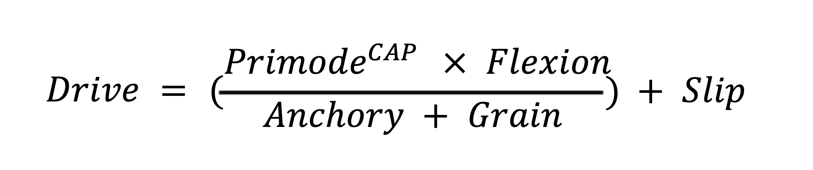

The Core Theory of Cognitive Drive Architecture
Lagunian Dynamics is the model behind my work. It uses six simple parts, such as how ready you are to start, how well you hold focus, and how much inner friction you have, to explain when effort begins, holds, or breaks. Below is the full detail for anyone who wants it.
Primode: how ready you are to start. CAP: your push of willpower. Flexion: how well the task fits you right now. Anchory: how well you can hold your focus. Grain: inner friction and resistance. Slip: day-to-day wobble.
Lagunian Dynamics is the foundational theory of Cognitive Drive Architecture (CDA).
It provides a first-principles model of Drive, explaining how cognitive effort emerges as a structural output of interacting system variables.
Where CDA defines the field, Lagunian Dynamics defines the mechanics:
Cognitive psychology lacks a rigorous structural model explaining:
(Lagun's Law)
At the core of Lagunian Dynamics is a simple proposition:
Drive is structurally possible when Primode surpasses its ignition threshold under modulated CAP, and Flexion remains sufficient to stabilize attention across system resistance.

This equation predicts:
The threshold readiness state determines if Drive can ignite.
Volitional energy modulating Primode; higher CAP → higher ignition probability.
Structural elasticity, or how well the task "fits" the current cognitive state; high Flexion enables sustained engagement.
Strength of attentional tethering stabilizes focus during performance.
Internal friction and resistance: higher Grain increases cognitive effort cost.
Controlled variability allows adaptive adjustment but introduces performance noise.
Whether Drive begins (Primode, CAP).
How Drive is sustained (Flexion, Anchory, Grain).
Moment-to-moment variability in performance (Slip).
No ignition despite intention.
Volitional tension without action.
Early burnout or dropout.
Attentional drift mid-task.
Persistent but non-productive focus.
Inconsistent performance across time.
Paralysis under pressure.
Drive failure is not random, it corresponds to specific misalignments of variables.
Lagunian Dynamics enables: